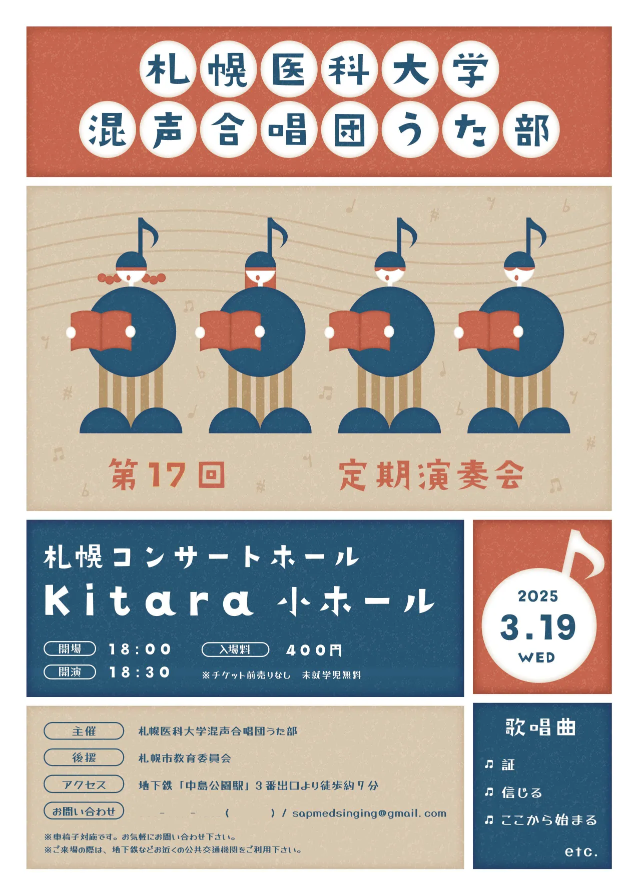

ポスター制作
札幌医科大学 うた部 定期演奏会 メインビジュアル
サカイデザインアトリエ開業前の大学在学中に、前年度に引き続き、札幌医科大学混声合唱団うた部 第17回定期演奏会のメインビジュアル制作をご依頼いただき、メインビジュアルを担当しました。
今回は、合唱であることが一目で伝わるよう、四部合唱をイメージした4人のキャラクターをメインモチーフに採用。音符を帽子として取り入れ、本を手に歌う姿をシンプルな図形で表現することで、演奏会の内容を直感的に伝えられるビジュアルを目指しました。
また、クラシックだけでなくポップスなど幅広い楽曲を披露する演奏会であることから、親しみやすく温かみのある色使いと、やわらかなレトロテイストの表現を取り入れ、音楽に馴染みのない方でも気軽に足を運びたくなる雰囲気を演出しています。
ポスターを中心に、フライヤーやパンフレット表紙などの展開も担当し、定期演奏会の広報活動全体で活用いただきました。